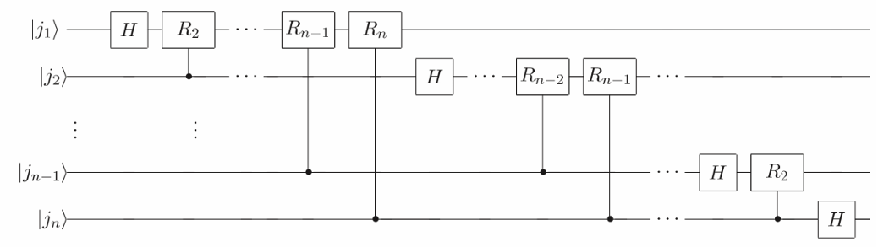
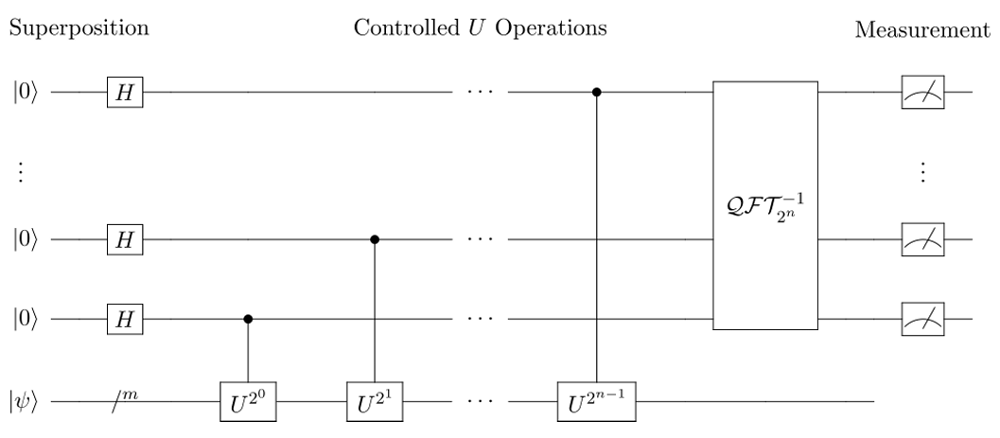
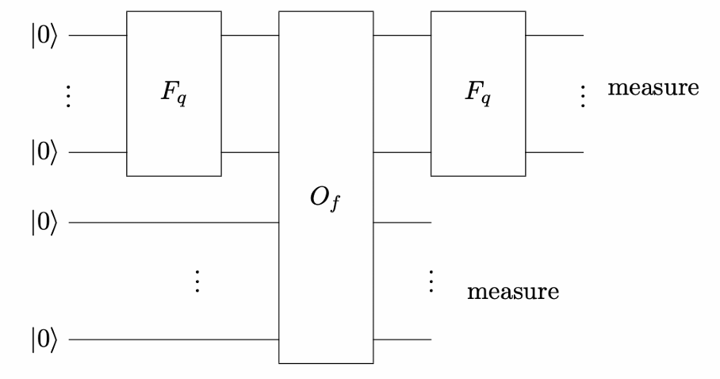
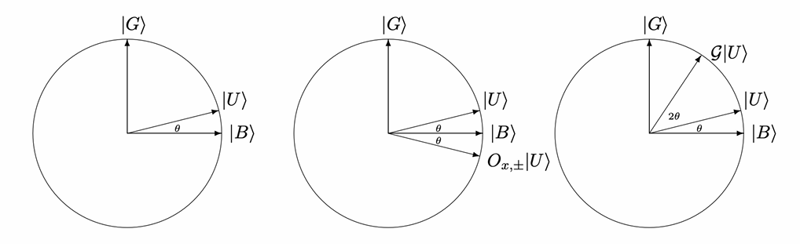
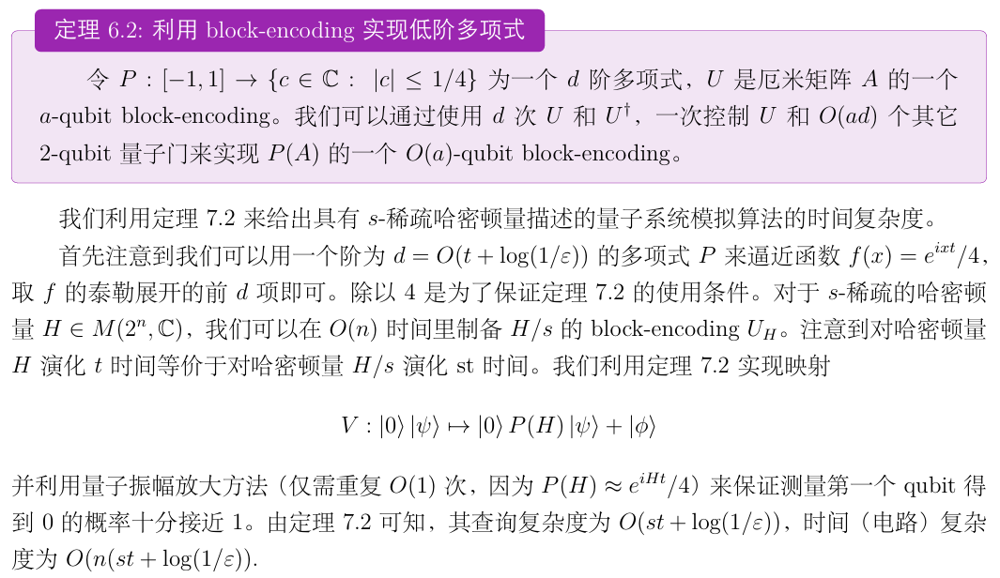
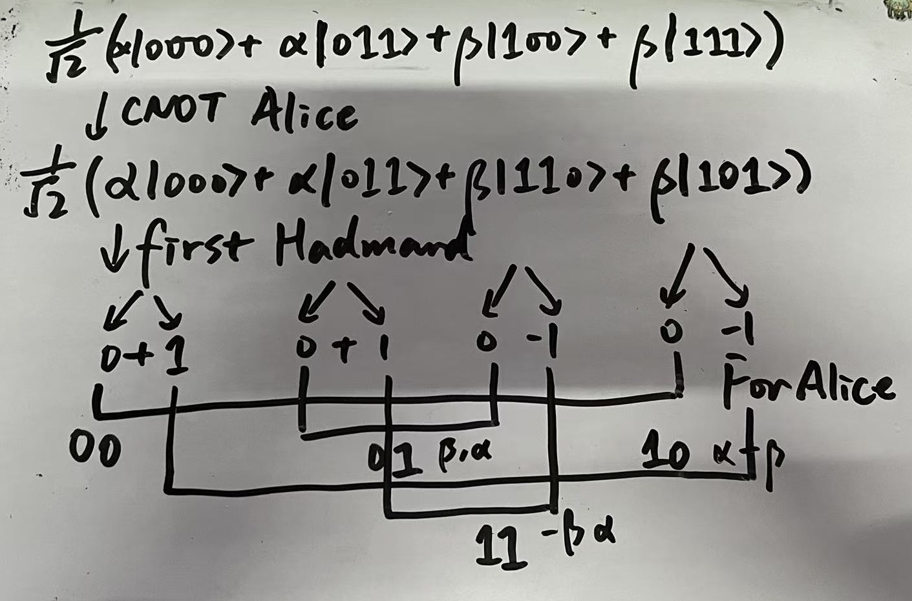
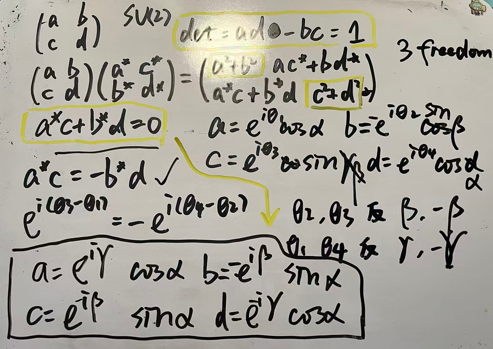

量子计算
爱来自楠桑粉丝后援团，抄书来自楠桑讲义
学期结束的时候会将全篇pdf格式上传，链接放在文首：
https://pan.baidu.com/s/1GIVTPvzMYJ0LG24vxMWvyQ?pwd=6312 提取码: 6312
封面图来源X，拍摄者未知
```table-of-contents
```
态
$$\ket{+}=\frac{1}{\sqrt{2}}(\ket{0}+\ket{1})$$
$$\ket{-}=\frac{1}{\sqrt{2}}(\ket{0}+\ket{1})$$
EPR(Bell)态:
$$\frac{1}{\sqrt{2}}(\ket{00}\pm\ket{11})$$
$$\frac{1}{\sqrt{2}}(\ket{01}\pm\ket{10})$$
量子门
XYZ
泡利矩阵
$$
I=\begin{pmatrix}
1 & 0\\
0 & 1
\end{pmatrix},\quad
X=\begin{pmatrix}
0 & 1\\
1 & 0
\end{pmatrix},\quad
Y=\begin{pmatrix}
0 & -i\\
i & 0
\end{pmatrix},\quad
Z=\begin{pmatrix}
1 & 0\\
0 & -1
\end{pmatrix}.
$$
X翻转01，Z给1加负号，Y=iXZ，i+翻转+符号
CNOT
在第二个比特上$\oplus$第一个比特，也可以是当第一个比特为1时翻转第二个。矩阵表示
$$CNOT = \begin{bmatrix} 1 & 0&0&0 \\ 0 & 1&0&0 \\0 & 0&0&1 \\0 & 0&1&0 \\ \end{bmatrix}$$
Hadamard门
将z方向上自旋本征向量扭到x方向上本征向量。至于y方向？对不起，因为带了虚数，所以不认识你
$$H = \frac{1}{\sqrt{2}} \begin{bmatrix} 1 & 1 \\ 1 & -1 \end{bmatrix}$$
$$H\ket{0}=\frac{1}{\sqrt{2}}(\ket{0}+\ket{1})$$
$$H\ket{1}=\frac{1}{\sqrt{2}}(\ket{0}-\ket{1})$$
[!tip] 性质
$$H^{\otimes n}\ket{i}=(H\ket{i_1})\otimes...\otimes(H\ket{i_n})=\frac{1}{\sqrt{2^n}}\sum_{j\in\{0,1\}^n}(-1)^{i·j}\ket{j}$$
证明：使用归纳法。n=1时由上面两个式子可以看出来成立。假设在n=N处成立，考虑N+1的情况
$$\begin{align*}
&H^{\otimes(N+1)}\ket{i_1...i_{N+1}}=(H^{\otimes N}\ket{i_1...i_{N}})\otimes(H\ket{i_{N+1}})
\\&= \left[ \frac{1}{\sqrt{2^k}} \sum_{j_1,\dots,j_k} (-1)^{\sum_{t=1}^k i_t j_t} |j_1 \dots j_k\rangle \right]
\otimes
\left[ \frac{1}{\sqrt{2}} \sum_{j_{k+1}=0}^1 (-1)^{i_{k+1} j_{k+1}} |j_{k+1}\rangle \right]
\\&= \frac{1}{\sqrt{2^{k+1}}} \sum_{j_1,\dots,j_{k+1}} (-1)^{\sum_{t=1}^{k+1} i_t j_t} |j_1 \dots j_{k+1}\rangle
\end{align*}$$
得证
看这个性质，把一个玩意变成另一个玩意的级数展开，原来的这个信息储存在系数上，这不就是离散傅里叶变换吗？事实确实如此，这就是二维的DFT矩阵
Toffoli门
作用在3个比特上，当前两个比特均为1时，第三个比特作用反转门，否则什么都不做。其矩阵表示为
$$|0\rangle\langle 0| \otimes |0\rangle\langle 0| \otimes I_2
+ |0\rangle\langle 0| \otimes |1\rangle\langle 1| \otimes I_2
+ |1\rangle\langle 1| \otimes |0\rangle\langle 0| \otimes I_2
+ |1\rangle\langle 1| \otimes |1\rangle\langle 1| \otimes X$$
- 用Toffoli门实现AND门：第三个比特固定为0，前两个比特作为AND门输入，输出第三个比特即为前两个比特的AND
- 用Toffoli门实现NOT门：前两个比特固定为一，第三个比特翻转
- 用Toffoli门实现OR门：先分别NOT，再AND，再将结果NOT
验算一下，10->01->0->1 ; 00->11->1->0 ; 11->00->0->1
使用 CNOT、H 和 T 门（以及$T^\dagger$门）实现 Toffoli 门的标准分解方案
**控制位：** $q_0, q_1$
**目标位：** $q_2$
- 在目标位 $q_2$ 上施加 **H** 门。
- 施加 **CNOT($q_1, q_2$)**。
- 在 $q_2$ 上施加 **$T^\dagger$** 门。
- 施加 **CNOT($q_0, q_2$)**。
- 在 $q_2$ 上施加 **T** 门。
- 施加 **CNOT($q_1, q_2$)**。
- 在 $q_2$ 上施加 **$T^\dagger$** 门。
- 施加 **CNOT($q_0, q_2$)**。
- 在 $q_2$ 施加 **T** 门，在 $q_1$ 施加 **$T^\dagger$** 门，随后在 $q_2$ 施加 **H** 门。
- 施加 **CNOT($q_0, q_1$)**。
- 在 $q_0$ 施加 **T** 门，在 $q_1$ 施加 **$T^\dagger$** 门。
- 施加 **CNOT($q_0, q_1$)**。
SWAP门
交换两个量子比特的顺序
- SWAP 矩阵：
$$\text{SWAP} = \begin{pmatrix} 1 & 0 & 0 & 0 \\ 0 & 0 & 1 & 0 \\ 0 & 1 & 0 & 0 \\ 0 & 0 & 0 & 1 \end{pmatrix}$$
- CNOT 实现SWAP门：
- CNOT(q0, q1)
- CNOT(q1, q0)
- CNOT(q0, q1)
量子电路演化
$$U_f\ket{x}\ket{b}=\ket{x}\ket{b\oplus f(x)}$$
其中$\ket{x}=\ket{x_1...x_n}$，$\oplus$表示比特加法
Oracle
木瓜内斗的时候，一辆oracle开向远方。。。
用于查询某个位置上的比特串数值。$\vec x\in\{0,1\}^N$
$$O_{\vec{x}}(i,0)=(i,x_i)$$
$$O_{\vec{x}}\ket{i}\ket{b}=\ket{i}\ket{b\oplus x_i}$$
相位查询，此处i是二进制编码的位置信息
$$O_{\vec{x}}(\ket{i}\ket{-})=\frac{1}{\sqrt{2}}(\ket{i}\ket{x_i}-\ket{i}\ket{1\oplus x_i})=(-1)^{x_i}\ket{i}\ket{-}$$
Deutsch-Jozsa算法
给定一个比特串$\vec{x}\in\{0,1\}^N\quad(N=2^n)$
已知x中每个位置值都相同，或者一半1一半0，用量子算法只需要查询一次即可知道是哪种情况。
第一步：先对着n个0全部作用Hadamard门然后混在一起，造出全部可能位置的叠加
$$\frac{1}{\sqrt{2^n}}\sum_{i\in\{0,1\}^n}\ket{i}$$
作用相位查询，附加上正负(利用Hadamard门张量积的性质)
$$\frac{1}{2^n}\sum_{i\in\{0,1\}^n}(-1)^{x_i}\sum_{j\in\{0,1\}^n}(-1)^{i·j}\ket{j}$$
只考虑$\ket{0}^{\otimes n}$前的系数
$$\frac{1}{2^n}\sum_{i\in\{0,1\}^n}(-1)^{x_i}$$
如果x中一半1一半0，那么这个系数是0；每个位置值都相同时，这个系数是正负1
最后对$\ket{0}^{\otimes n}$进行投影测量即可一次得出x的属性
此算法查询复杂度为1，时间复杂度为$O(n)$(来自2n个Hadamard门)
[!note] 推论
给定一个$N=2^n$比特的字符串x满足$x_i=i·a$。通过查询x来确定a的数值。
注意到当a=0时，得到x全0向量；当a非零时，得到的总是10对半开向量。当a非零时，回到DJ算法的最终状态
$$\frac{1}{2^n}\sum_{i\in\{0,1\}^n}(-1)^{x_i}\sum_{j\in\{0,1\}^n}(-1)^{i·j}\ket{j}=\frac{1}{2^n}\sum_{i,j\in\{0,1\}^n}(-1)^{i·(a+j)}\ket{j}$$
当j=a时，振幅总为1；当j≠a时，振幅为0，最后只余下了与a相等的向量
$$\frac{1}{2^n}\sum_{i,j\in\{0,1\}^n}(-1)^{i·(a+j)}\ket{j}=\ket{a}$$
所以得到了a的具体值。不过这两个问题都挺人造的
大数分解
量子计算各大算法中当之无愧top1（该不是因为别的算法都没啥用吧.jpg）
picture
偶数或者素数幂次是容易分解的，下面展示奇数且非素数幂次的N的分解方式
- 选取正整数$a\le a
- 若$\gcd(a,N)>1$则已给出非平凡分解；否则aN互素，需要计算一个最小的正整数r满足$a^r\equiv 1\bmod~N$
- 若r奇数，回到第一步重来；否则N整除$(a^{r/2}+ 1)(a^{r/2}- 1)$，由于上一步r是最小的，所以只用看+号
- 计算$g=\gcd(a^{r/2}+1,N)$，若$g=N$说明$N|(a^{r/2}+ 1)$，否则$1
[!tip] 辗转相除法时间复杂度
引理：假设使用辗转相除法计算a与b(a>b>0)的最大公约数需要N步，那么满足这一条件的a和b最小值为斐波那契数$F_{N+2}$和$F_{N+1}$
证明：使用数学归纳法，N=1意味着b整除a，此时最小值为$a=2,b=1$，恰为$F_3$和$F_2$。
现在假设对M-1步有效，则M步辗转相除的第一步是$a=q_0b+r_0$，第二步是$b=q_1r_0+r_1$，也就是说需要M-1步算出$\gcd(b,r_0)$，那么b和$r_0$的最小值是$F_{M+1}$和$F_M$。
当$q_0=1$时a取最小值$F_{M+1}+F_M=F_{M+2}$，得证。
斐波那契数列
$$F_n = \frac{1}{\sqrt{5}} \left( \left( \frac{1 + \sqrt{5}}{2} \right)^n - \left( \frac{1 - \sqrt{5}}{2} \right)^n \right)$$
那么对于这个算法的时间复杂度，假设需要N步，那么b至少是$F_{N+1}$，也就至少是$\phi^{N+1}/\sqrt{5}$，其中$\phi=(1+\sqrt{5})/2$是较大的那个黄金分割数，反解出
$$N\ge\log_\phi(\sqrt{5}b)-1\Rightarrow N=O(\log b)$$
当然这些常数都不重要，最后复杂度是对数复杂度。
那么最重要的就是改善第二步的时间复杂度了，第二步等价于求$f(x)= a^x\bmod N$的周期，shor算法主要就是在干这个。
Simon问题
已知长度为$N^N(N=2^n)$的字符串$\vec{x}\in\{0,...,N-1\}^N$满足：存在一个比特串$s\in\{0,1\}^n$使得$x_i=x_j$ iff $j=i\oplus s$。给定$O_{\vec{x}}$，求周期s
方法：
第一步和D-J一样，先对着n个0全部作用Hadamard门然后混在一起，造出全部可能位置的叠加，不过此时尾巴上附加了0，方便使用oracle查询
$$\frac{1}{\sqrt{2^n}}\sum_{i\in\{0,1\}^n}\ket{i}\ket{0^n}$$
作用上$O_{\vec{x}}$之后
$$\frac{1}{\sqrt{2^n}}\sum_{i\in\{0,1\}^n}\ket{i}\ket{x_i}$$
现在对第二个位置进行测量，当测量结果为$x_i$时，系统会坍缩到
$$\frac{1}{\sqrt{2}}(\ket{i}+\ket{i\oplus s})\ket{x_i}$$
这个时候只关注前半部分，我们知道
$$H^{\otimes n}\ket{i}=\frac{1}{\sqrt{2^n}}\sum_{j\in\{0,1\}^n}(-1)^{i·j}\ket{j}$$
所以对前半部分作用$H^{\otimes n}$后得到
$$\begin{align*}
&\frac{1}{\sqrt{2}}(\frac{1}{\sqrt{2^n}}\sum_{j\in\{0,1\}^n}(-1)^{i·j}\ket{j}+\frac{1}{\sqrt{2^n}}\sum_{j\in\{0,1\}^n}(-1)^{(i\oplus s)·j}\ket{j})
\\=&\frac{1}{\sqrt{2^{n+1}}}\sum_{j\in\{0,1\}^n}(-1)^{i·j}(1+(-1)^{s·j})\ket{j}=\frac{1}{\sqrt{2^{n-1}}}\sum_{j\in\{0,1\}^n,s·j=0}(-1)^{i·j}\ket{j}
\end{align*}
$$
此处求和项只包含与s垂直的j。反之，只要知道n-1个线性无关的j，就可以通过解线性方程组的方法求出s。接下来对j进行采样，在采第m个j的时候，只要采到某个与前m-1个线性无关的j即可。
由于在$\mathbb{F}_2$中，每个系数只有2种可能的取值$\pm1$，总共有n-1个线性无关的j，故采到与前m-1个线性无关的j的概率为$(2^{n-1}-2^{m-1})/2^{n-1}$。由于m最大为n-1，所以这个概率不低于1/2，每次采样采个两次就差不多可以满足要求了，时间复杂度为$O(n)$
最后解线性方程组即可得到s
量子DFT
DFT太常见了，就是把N次单位根在行列上转圈圈，构成一个矩阵（还是酉的呢）
$$(F_N)_{jk}=\frac{1}{\sqrt{N}}\omega_N^{jk},\quad j,k=0,...,N-1$$
直接计算需要花费$O(N^2)$的时间，快速傅里叶算法需要花费$O(NlogN)$的时间，而量子计算机仅需花费$O(logN)$的时间。
为了使用量子算法，先把下表jk给写成二进制$j_1...j_n$和$k_1...k_n$，那么$k/2^n=k_l 2^{-l}$（自动求和）。与此同时，由于规模从N变为$2^n$，单位根也变成$2^n$单位根$\exp(2\pi i/2^n)$。
我们关注$F_N$作用在基$\ket{j}$上的效果(唉我都学物理了，不写求和号了)
$$\begin{align*}
F_N\ket{j}=\frac{1}{\sqrt{N}}e^{2\pi ikj/2^n}\ket{k}=\frac{1}{\sqrt{N}}e^{2\pi ijk_l 2^{-l}}\ket{k_1...k_n}=\frac{1}{\sqrt{N}}\bigoplus_l e^{2\pi ijk_l 2^{-l}}\ket{k_l}
\end{align*}$$
也就是把被变换的向量存到单位根的幂次上，这个要有个直观的感受方便日后直接书写
由于单个位置上$k_l$只能为0或1，我们把$k_l$求和直接写出来
$$\begin{align*}
F_N\ket{j}=\frac{1}{\sqrt{2^n}}\bigoplus_{l=1}^n(\ket{0}+ e^{2\pi ij 2^{-l}}\ket{1})
\end{align*}$$
也就是说当对第j个坐标基进行DFT时，我们只需要在每个比特上对$\ket{0}+\ket{1}$作用旋转门$R_Z(j/2^l)=diag(1,\exp(2\pi ij/2^l))$即可，单位形式为$R_l=diag(1,\exp(2\pi i/2^l))$
注意到
$$j/2^l=j_1 2^{n-1-l}+j_2 2^{n-2-l}+...+j_n 2^{-l}$$
由于这一串东西出现在$\exp(2\pi i/2^l)$中，所以2的非负次幂都是不起作用的，仅需看后l位
$$\exp(2\pi i/2^l)=\exp(2\pi ij_{n-l+1}/2)\times ...\times\exp(2\pi ij_{n}/2^l)$$
[!note] 特殊情况($R_1(j_k)$)
记$R_1(j_k)=diag(1,\exp(2\pi ij_k/2))$为受$j_k$控制的旋转门，那么$j_k=1$时第二个位置取-1，否则取+1，也就是
$$\frac{1}{\sqrt{2}}R_1(j_k)(\ket{0}+\ket{1})=\frac{1}{\sqrt{2}}(\ket{0}\pm\ket{1})=H\ket{j_k}$$
可以看见H的作用相当于将原基态变成了叠加态，并进行了第一次旋转，有点像是起偏。并且H可以和其他任何控制旋转交换，毕竟其他控制旋转是对角的。所以在下文中你会看见先进行其他旋转，最后作用H（起偏）

我们一个个来看每一个位置l，首先分母$2^l$最小的时候是最简单的情形，因为前面一大堆的非负幂次都不用管，恰好只有最后一个位置变成$j_n/2$了，这个时候l=1，第一位$j_1$的变化为
$$\begin{align*}
(F_N\ket{j})_1=\frac{1}{\sqrt{2}}(\ket{0}+ e^{2\pi ij_n/2}\ket{1})
\end{align*}$$
这恰好就是$H\ket{j_n}$
那么第二位呢，需要处理的是$j_{n-1}/2+j_n/2^2$
$$\begin{align*}
(F_N\ket{j})_2=\frac{1}{\sqrt{2}}(\ket{0}+ e^{2\pi ij_{n-1}/2}e^{2\pi ij_{n}/4}\ket{1})=H·R_2(j_{n})\ket{j_{n-1}}
\end{align*}$$
第三位需要处理$j_{n-2}/2+j_{n-1}/2^2+j_n/2^3$
$$\begin{align*}
(F_N\ket{j})_3=\frac{1}{\sqrt{2}}(\ket{0}+ e^{2\pi ij_{n-2}/2}e^{2\pi ij_{n-1}/4}e^{2\pi ij_n/8}\ket{1})=HR_2(j_{n-1})R_3(j_{n})\ket{j_{n-2}}
\end{align*}$$
然后你会发现每一位都是先从$j_n$开始控制旋转，一直到自己那一位了，做个H收尾
$$(F_N\ket{j})_k=HR_2(j_{n-k+2})...R_k(j_n)\ket{j_{n-k+1}}$$
最后第n位是
$$(F_N\ket{j})_n=HR_2(j_{2})...R_n(j_n)\ket{j_{1}}$$
然后再对着图看，每一行从左往右依次是对该行进行的变换（反正这些H和R都是可交换的），控制旋转另外一只带点的手表示这个旋转受谁控制。因为每一行的操作都要读取下面所有行的值，而下面却不用读上面，所以我做变换的时候直接把这一位随便改写都没关系。
$j_1$变完了之后生成的是变换后的第n位，然后一行一行往下面做。
最后还要在做个SWAP顺序反转（有点像FFT蝶形运算）
电路规模
一共需要n个H门和$n(n-1)/2$个控制旋转门，后者可以通过少量单量子比特门逼近，所以电路规模是poly(n)，还算少量
估计酉算子特征
对NxN规模的酉算子U，其特征值在单位圆上。已知一个特征向量$\ket{\psi}$，估计其特征值$\lambda=e^{2\pi i\phi}$。
$$U\ket{\psi}=e^{2\pi i\phi}\ket{\psi}$$
步骤：
- 先用n个H糊出$\frac{1}{\sqrt{N}}\sum_j\ket{j}\ket{\psi}$
- 把j拆散成二进制，然后利用类似的控制U（如图）作用在$\ket{\psi}$上实现$e^{2\pi ij\phi}\ket{j}\ket{\psi}$

注意到此时状态为
$$\frac{1}{\sqrt{2^n}}e^{2\pi ij\phi}\ket{j}\ket{\psi}=\frac{1}{\sqrt{2^n}}e^{2\pi ij0.\phi_1...\phi_n/2^n}\ket{j}\ket{\psi}=(F_N\otimes I)\ket{0.\phi_1...\phi_n}\ket{\psi}$$
其中$0.\phi_1...\phi_n=\phi_1/2+...+\phi_n/2^n$
- 对前半部分使用IDFT，即可还原出$0.\phi_1...\phi_n$（$\phi$本身就是个小数，所以精确到二进制小数点后n位了）
Shor算法
假设已有查询f的oracle
$$O_f(\ket{x}\ket{0^n})=\ket{x}\ket{f(x)}$$
其中$f(x)$被记录在n个量子比特上，为了对其使用DFT，首先找到一个规格$q=2^l\in(N^2,2N^2]$，然后构造$F_q$，使得
$$\ket{j}\mapsto F_q\ket{j}=\frac{1}{\sqrt{q}}e^{2\pi ikj/2^l}\ket{k}$$
执行这样的电路

对$\ket{0^l}\ket{0^n}$的前半部分使用DFT得到
$$\frac{1}{\sqrt{q}}\sum_{x=0}^{q-1}\ket{x}\ket{0}$$
再作用$O_f$得到
$$\frac{1}{\sqrt{q}}\sum_{x=0}^{q-1}\ket{x}\ket{f(x)}$$
与Simon问题类似，仅测量后半部分，此时前半部分会坍缩到$x+jr(j=0,...,m-1)$的叠加态$\frac{1}{\sqrt{m}}\sum_{j=0}^{m-1}\ket{jr+x_0}$，这时候再做DFT，把周期存在单位根的幂次上
$$\frac{1}{\sqrt{mq}}\sum_{jb}e^{2\pi ix_0b/q}e^{2\pi i jrb/q}\ket{b}$$
后面一项是一个类似迪利克雷核之类的东西。如果$\exp(2\pi irb/q)=1$，那么$\sum_j e^{2\pi i jrb/q}=m$，此时b是$q/r$的整数倍
如果周期r是DFT规格q的一个因数，那么在自变量可取范围内恰好有m=q/r个周期，也就是说$q/r$是整数
结合上面两个条件可得$\ket{b}$的振幅为$m/\sqrt{mq}=\sqrt{m/q}=1/\sqrt{r}$，设b=kq/r，式子简化为
$$\frac{1}{\sqrt{r}}\sum_{k=0}^{r-1}e^{2\pi ix_0k/r}\ket{kq/r}$$
如果对他做测量，可以以概率1/r得到kq/r(k=0,...,r-1)中的随机元素b。现在我们已知b和规模q，已知$b/q=k/r$，想确定k和r
如果k与r互素，那么k就是唯一确定的。也就是我们以均匀概率去ran一个比r小的数（包括0），ran出来的数与r互素的概率是有个下界的$\Omega(1/\log\log r)$，那么重复测量$\log\log N$次，约分，取最大的那个r即可
[!note] 引理（Mertens第三定理[^1]）
k在所有小于r的自然数中均匀取值，则
$$Pr[gcd(k,r)=1]\ge\frac{e^{-\gamma}}{\log\log r}$$
证明：定义Mangoldt函数
$$\Lambda(n)=\log p~(n=p^k),\quad 0~(otherwise)$$
定义
$$T(x)=\log\lfloor x\rfloor!$$
由于$n=\Pi p^{a_p}$，所以
$$\sum_{d|n}\Lambda(d)=\sum_p\sum^{a_p}\Lambda(p)=\sum_p a_p\log p=\log n$$
所以
$$T(x)=\sum_{n\le x}\log n=\sum_{n\le x}\sum_{d|n}\Lambda(d)=\sum_{d\le x}\Lambda(d)\sum_{n\le x,d|n}1=\sum_{d\le x}\Lambda(d)\lfloor\frac{x}{d}\rfloor=x\sum_{n\le x}\frac{\Lambda(n)}{n}+O(x)$$
由斯大林公式，$T(x)=x\log x-x+O(\log x)$，对比可得
$$S_1(u)=\sum_{n\le x}\frac{\Lambda(n)}{n}=\log x+O(1)$$
设上式中的余项$R(x)=\sum_{n\le x}\frac{\Lambda(n)}{n}-\log x$，根据Riemann–Stieltjes积分可得
$$\begin{align*}
\sum_{p^k\le x}\frac{1}{kp^k}&=\sum_{n\le x}\frac{\Lambda(n)}{n\log n}=\int_{2^-}^x\frac{dS_1(u)}{\log u}
\\&=\int_2^x\frac{du}{u\log u}+\int_{2^-}^x\frac{dR(u)}{\log u}
\\&=\log\log x-\log\log 2+R(x)/\log x-R(2)/\log 2-\int_2^xR(u)d(\frac{1}{\log u})
\end{align*}$$
由于$R(x)=O(1)$，将素数高次幂的情况从求和中移至等式右侧后得
$$\sum_{p\le x}\frac{1}{p}=\log\log x+c-\sum_p\sum_{k\ge 2,p^k\le x}\frac{1}{kp^k}+O(\frac{1}{\log x})$$
其中
$$c=1-\log\log 2+\int_2^\infty R(u)d(\frac{1}{\log u})$$
由于常数值的具体计算不是本课程核心，所以给个结论$c=\gamma$
为了方便将定积分上限推至无穷，误差仍在$O(1/\log x)$范围内
下面计算右式的级数，为了方便，忽略求和上限$p^k\le x$，求和尾项被$O(1/x)$控制所以被合并至$O(1/\log x)$误差项。考虑到log函数的泰勒级数$-\log(1-y)=\sum_{k\ge1}y^k/k$，也即
$$-\log(1-\frac{1}{p})-\frac{1}{p}=\sum_{k\ge2}\frac{1}{kp^k}$$
带入到原等式中得
$$\sum_{p\le x}\frac{1}{p}=\log\log x+\gamma+\sum_p[\frac{1}{p}+\log(1-\frac{1}{p})]+O(\frac{1}{\log x})$$
移项整理得
$$\sum_{p\le x}\log(1-\frac{1}{p})=-\log\log x-\gamma+O(\frac{1}{\log x})$$
两侧取指数得
$$\prod_{p\le x}(1-\frac{1}{p})=\frac{e^{-\gamma}}{\log x}+O(\frac{1}{\log^2 x})$$
又因为$Pr[gcd(k,r)=1]=\phi(r)/r=\prod_{p|r}(1-\frac{1}{p})$，最差的情况r是连续素数积（因为此时$p\le x$成立时$p|n$自动成立，其他情况由于$p|n$限制会导致乘积项变少，乘积变大），满足$r=\prod_{p\le x}p\Rightarrow\log r=\sum_{p\le x}\log p$，由素数定理的等价描述，$\sum_{p\le x}\log p\sim x$，故$\log r\sim x$。那么对于任意r有
$$Pr[gcd(k,r)=1]\ge\frac{e^{-\gamma}}{\log\log r}$$
复杂情形是r不是q的因数，此时范围内的周期数m可能为$\lfloor q/r \rfloor$或$\lceil q/r\rceil$，这时利用$|1-e^{i\theta}|=2|sin(\theta/2)|$(很简单的等腰三角形求底的几何问题)，将等比数列求和的模长写为
$$\left|\frac{1-e^{2\pi imrb/q}}{1-e^{2\pi i rb/q}}\right|=\frac{sin(\pi mrb/q)}{sin(\pi rb/q)}$$
这个振幅足够大的时候，分母足够小，也就是说$rb/q$靠近某个整数c，不难理解我们总是可以以较大的概率（下面详细说明）求得b满足
$$\left|\frac{b}{q}-\frac{c}{r}\right|\le\frac{1}{2q}$$
这式子感觉就有点像DFT里面栅栏效应分辨率那种题目。b/q的分辨率是1/q，所以对任何数总有b能满足最小距离不超过1/2q
当这个条件被满足时，我们可以用$\frac{2}{\pi}\theta\le\sin\theta\le\theta$来估算振幅
$$\frac{1}{\sqrt{mq}}\frac{sin(\pi mrb/q)}{sin(\pi rb/q)}\ge\frac{2}{\pi}\sqrt{\frac{m}{q}}\ge\frac{2}{\pi}\sqrt{\frac{1}{r}-\frac{1}{q}}$$
Why较大的概率？我们数一数所有b that 存在小于r的正整数c使得上式被满足的数目。首先一个c至少对应一个b，c一共有r个，所以这样的b至少有r个。那么测量到符合要求的b的概率至少为
$$P\ge\frac{4}{\pi^2}(1-\frac{r}{q})\ge\frac{4}{\pi^2}(1-\frac{1}{N})$$
是接近常数概率的，绝对够用了！
我们总是可以假设c与r互素（因为概率大，c是不超过r-1的那个被ran出来的数），假设有两个不同的最简分数$c/r$和$c'/r'$，我们来计算一下他俩的距离
$$\left|\frac{c}{r}-\frac{c'}{r'}\right|=\left|\frac{cr'-c'r}{rr'}\right|\ge|\frac{1}{rr'}|\ge\frac{1}{N^2}\ge\frac{1}{q}$$
现在你知道上上个不等式的右侧是什么意思了——他保证$c/r$的唯一性。下面通过计算$b/q$的误差小于$1/2q$的有理数近似就可以通过分母得到r的取值
[!info] 连分数表示
给定一组正整数$[a_0,a_1,...]$(任意长度)，记其连分数为
$$a_0+\frac{1}{a_1+\frac{1}{a_2+...}}$$
计算给定数字x的连分数表达用到这个方法
$$a_0=\lfloor x \rfloor,x_1=1/(x-a_0)$$
$$a_1=\lfloor x_1 \rfloor,x_2=1/(x_1-a_1)$$
$$...$$
就是每一位$a_n$负责整数部分，小数部分给他倒一下进入下一个$a_{n+1}$
反过来用已知的连分数去计算x的分数逼近
$$p_0=a_0,p_1=a_1a_0+1,p_n=a_n p_{n-1}+p_{n-2}$$
$$q_0=1,q_1=a_1,q_n=a_nq_{n-1}+q_{n-2}$$
$$[a_0,...,a_n]=p_n/q_n$$
（证明上式：使用数学归纳法，先直接验证n=0和1的情况，然后假设k时正确去验证k+1，此时我们将后两项合并为一项$a_k+1/a_{k+1}$以缩短长度，然后再用k时的计算公式
$$\frac{p'_k}{q'_k} = \frac{(a_k + \frac{1}{a_{k+1}}) p_{k-1} + p_{k-2}}{(a_k + \frac{1}{a_{k+1}}) q_{k-1} + q_{k-2}}= \frac{a_{k+1}(a_k p_{k-1} + p_{k-2}) + p_{k-1}}{a_{k+1}(a_k q_{k-1} + q_{k-2}) + q_{k-1}}$$
根据原序列的递推定义，$a_k p_{k-1} + p_{k-2} = p_k$ 且 $a_k q_{k-1} + q_{k-2} = q_k$，代入上式：)
$$\frac{p'_k}{q'_k} = \frac{a_{k+1} p_k + p_{k-1}}{a_{k+1} q_k + q_{k-1}}=\frac{p_{k+1}}{q_{k+1}}$$
接下来证明渐近分数 $p_n/q_n$ 不可约，也即证明$p_n q_{n-1} - q_n p_{n-1} = (-1)^{n-1}$，还是使用数学归纳法，先直接验证n=1，然后由k推出k+1，用递推关系式带进式子里
$$p_{k+1} q_k - q_{k+1} p_k = (a_{k+1} p_k + p_{k-1}) q_k - (a_{k+1} q_k + q_{k-1}) p_k= -(p_k q_{k-1} - q_k p_{k-1})= (-1)^k$$
如果一个整数同时为pn和qn的因子，那么一定是他们线性组合结果(±1)的因数，只能是1
，故互素
连分数逼近定理：若$x=[a_0,a_1,...]$且$|x-c/r|\le1/2r^2$，则$c/r=p_k/q_k$对某个正整数k成立
注意到pn,qn都是单增的，存在唯一的n使得c/r处于n与n+1之间，换言之$q_n \le r < q_{n+1}$，我们把这个“处于两者之间”变成n与n-1线性叠加的方程，反正c/r原自由度是是两个，我给他叠加表示之后还是两个自由度，所以我想列就列
$$\begin{cases}u p_n + v p_{n-1} = c \\u q_n + v q_{n-1} = r\end{cases}$$
其系数行列式为 $p_n q_{n-1} - p_{n-1} q_n = (-1)^{n-1}$。由于行列式值为 $\pm 1$，方程组必有整数解 $u, v$。如果uv中有一个为0，那么c/r恰好有连分数表示，就结束了，下面我们假设$uv\neq0$并想办法得出矛盾
第一种情况$uv<0$，定义 $\delta_k = q_k x - p_k$，注意到$\delta_n$ 与 $\delta_{n-1}$ 符号相反（渐近分数在 $x$ 左右交替），以及
$$r x - c = (u q_n + v q_{n-1})x - (u p_n + v p_{n-1}) = u(q_n x - p_n) + v(q_{n-1} x - p_{n-1}) = u \delta_n + v \delta_{n-1}$$
$u, v$ 异号，则 $u \delta_n$ 与 $v \delta_{n-1}$ 同号。此时
$$|r x - c| = |u||\delta_n| + |v||\delta_{n-1}| \ge |\delta_{n-1}|$$
pn/qn与pn+1/qn+1之间的距离为1/qnqn+1，由于pn/qn到x距离是单减的，所以上一项误差必须大于1/2的距离，也即$|\delta_{n-1}| > \frac{1}{2q_n}$。由题目条件 $|x - c/r| < \frac{1}{2r^2} \implies |rx - c| < \frac{1}{2r}$联立上述不等式：
$$\frac{1}{2r} > |rx - c| \ge |\delta_{n-1}| > \frac{1}{2q_n}$$
即 $\frac{1}{2r} > \frac{1}{2q_n} \implies r < q_n$，这与我们设定的 $r \ge q_n$ 矛盾。
第二种情况$uv>0$，不妨设$u, v \ge 1$。由于 $|c q_n-p_n r|\ge1$，
$$\left|\frac{c}{r}-\frac{p_n}{q_n}\right|\ge\frac{1}{r q_n}.$$
而收敛分数误差满足
$$\left|x-\frac{p_n}{q_n}\right|<\frac{1}{q_n q_{n+1}}\le\frac{1}{q_n(q_n+q_{n-1})}.$$
故
$$\left|x-\frac{c}{r}\right|>\frac{1}{r(q_n+q_{n-1})}>\frac{1}{r^2}$$
与题目中所给的逼近条件矛盾，证毕
另解：![[lianfenshu.png]]
练习三的证明n阶估算误差上界，上面算了，也就是计算两个连分数之间的距离；然后要证pn/qn是分母不超过qn时的最佳估计
我们考虑分子误差$|rx-c|=|u \delta_n + v \delta_{n-1}|$，由连分数逼近的性质可知$\delta_n$与$\delta_{n-1}$反号，又由于$r=uq_n+vq_{n-1}\le q_n$可以得出当$uv\neq0$时$uv<0$，故$|rx-c|=|u \delta_n| +| v \delta_{n-1}|\ge|\delta_n|$，故
$$|x-\frac{c}{r}|\ge\frac{1}{r}|q_nx-p_n|\ge\frac{1}{q_n}|q_nx-p_n|=|x-\frac{p_n}{1_n}|$$
其他边界情况$u=0~or~v=0$时恰为n阶估计（被条件排除）或n-1阶估计（不如n阶估计）
注意$q>N^2\ge r^2$，最后一个约束条件被满足(我们的量子傅里叶变换规模q取N方以上（而不是N）就是为了这个逼近精度)，连分数逼近能够取到$c/r$。也就是说我们把已知的$b/q$用连分数依次写开直到误差不超过$1/2q$，此时把这个连分数通分后分母计算出来就得到了r
至此完成了shor算法
复杂度
时间复杂度$O((\log n)^2·\log\log n·\log\log\log n)$，其中量子DFT时间、经典后处理时间均为$O((\log n)^2)$，模指数运算时间接近$O((\log n)^3)$
使用量子门数为$O(\log n)$
隐子群问题
试图将上面的问题一般化
傅里叶分析对寻找周期函数的周期而言是行之有效的方法，而量子力学的测量坍缩放大了我们测出想要的周期的概率。推广至阿贝尔群上，我们只需将傅里叶变换的单位根推广至特征标。
给定一个群G和一个函数$f:G\to S$其中S是某个有限集合。假设这个函数满足存在G的子群H满足f在H的每个陪集上都是常数函数，但是在不同陪集上取不同的值，$f(g)=f(g')\Leftrightarrow gH=g'H$，试图找到子群H的生成元
也就是定义在商集（不一定）上的单射函数，H扮演了周期的地位
这里只介绍G是阿贝尔群的情形，此时不可约表示是一维的，特征标是单位圆上的复数
$$\chi_k(x)=w^{kx}_N$$
而这样的特征函数恰好有N个，使k遍历0至N-1即可，这恰好是DFT乘的东西。因此DFT可以视作将不同的特征标求和形成叠加态。一般阿贝尔群可以写成数个$\mathbb{Z}_N$的直积，那么对每个分量分别作DFT就好了.
定义在H上垂直的特征标
$$H^\perp=\{\chi_k|\chi_k(h)=1,\forall h\in H\}$$
解决阿贝尔群隐子群问题的步骤：
- 初始化：$\ket{0^n}\otimes\ket{0^m},n=\log|G|,m=\log|S|$
- 对前半部分Hadamard：$\frac{1}{\sqrt{|G|}}\sum_{g\in G}\ket{g}\ket{0}$
- 查询：$\frac{1}{\sqrt{|G|}}\sum_{g\in G}\ket{g}\ket{f(g)}$
- 对后半测量，前半坍缩至$\frac{1}{\sqrt{H}}\sum_{h\in H}\ket{sh}$
- DFT得到特征标$\frac{1}{\sqrt{|H|}}\sum_{h\in H}\ket{\chi_{sh}}$
$$\frac{1}{\sqrt{|H|}}\sum_{h\in H}\ket{\chi_{sh}}=\frac{1}{\sqrt{|H||G|}}\sum_{h\in H}\sum_{g\in G}\chi_{sh}(g)\ket{g}=\frac{1}{\sqrt{|H||G|}}\sum_{g\in G}\chi_{s}(g)\sum_{h\in H}\chi_{h}(g)\ket{g}$$
注意到若$\exists h'\in H,\chi_g(h')\neq1$，则$\sum\chi_g(h)=\chi_g(h')\sum\chi_g(h)$，故求和为0，也即$\sum_h\chi_g(h)$只对$H^\perp$求和，化简后
$$\frac{|H|}{|G|}\sum_{g:\chi_g\in H^\perp}\chi_s(g)\ket{g}$$
- 测量并输出g
上述算法可以高效的在$H^\perp$中采样，每个采样给了H一个约束（回忆simon算法的解线性方程组），这一采样被称为傅里叶采样
对于周期搜索算法，隐子群为$\braket{r}$，此时
$$H^\perp=\{\chi_b|br/\phi(N)\in\{0,...,r-1\}\}$$
Grover量子搜索算法
无结构搜索，通过多次反射快速逼近正确的向量
令$N=\{0,1\}^n$，给定比特串$\vec{x}\in\{0,1\}^N$，找到$i\in\{0,1\}^n$满足$x_i=1$，若不存在则输出无解
假设$\vec{x}$中有t个位置是1，定义两个正交态（Good state和Bad state）
$$\ket{G}=\frac{1}{\sqrt{t}}\sum_{i:x_i=1}\ket{i}\quad\ket{B}=\frac{1}{\sqrt{N-t}}\sum_{i:x_i=0}\ket{i}$$
也就是将那些想要（不想要）的位置拿出来凑成叠加态，前面的系数是为了归一化。这两个part(按比例)最后能构成全部的位置，也就是说
$$\ket{U}=\sin\theta\ket{G}+\cos\theta\ket{B},\theta=\arcsin\sqrt{\frac{t}{N}}$$
回忆一下相位查询的$O_{\vec{x},\pm}$，作用在$\ket{i}$上时会附加上$(-1)^{x_i}$，也就是说如果是1的话就反转一下，0就不动，这个算符恰好是相对Bad State的翻转$2\ket{B}\bra{B}-I$
此外，我们还需要一个关于全状态U的翻转，首先有对全0的翻转$R=2\ket{0^n}\bra{0^n}-I$，然后左右作用$H^{\otimes n}$，他会把全0变成全可能
$$H^{\otimes n}RH^{\otimes n}=H^{\otimes n}(2\ket{0^n}\bra{0^n}-I)H^{\otimes n}=2\ket{U}\bra{U}-I$$

可见作用一次$G=H^{\otimes n}RH^{\otimes n}O_{\vec{x},\pm}$之后，U会向Good State靠近$2\theta$角。当$(2k+1)\theta=\frac{\pi}{2}$时，就是纯Good State的理想状态，但是大多数情况k解出来不是整数，假设$\tilde{k}$是方程的解，我们用另外一个整数k去逼近，满足$|k-\tilde{k}|\le\frac{1}{2}$，再算一下出错概率
$$cos^2((2k+1)\theta)=\cos^2(\frac{\pi}{2}+2(k-\tilde{k}))=\sin^2(2(k-\tilde{k})\theta)\le\sin^2\theta=t/N$$
所以迭代次数应该是$k\le\frac{\pi}{4\theta}\le\frac{\pi}{4}\sqrt{\frac{N}{t}}$，也就是说这个算法是$O(\sqrt{N})$的
近似计数
目的是估计有多少个解
根据G作用在Good和Bad State的效果，我们不难发现G就是一个逆时针$2\theta$的旋转，特征值为$e^{\pm 2i\theta}$，特征向量是$\frac{1}{\sqrt{2}}\ket{G}\pm\frac{i}{\sqrt{2}}\ket{B}$，取$\alpha$是+号$\beta$是-号，我们的目的是估算$\theta$，也就是需要估算酉算符G特征值。
在量子DFT那一章介绍过估计酉算符特征值的做法，大概就是弄一大堆控制酉门，随后进行逆傅里叶变换，将相位上的信息转换到基态信息。QFT规模为$2^n$时，估算可以精确到二进制小数点后n位置，我们设这里的规模是$2^l$，那么估算结果$\tilde{\theta}$和真实结果$\theta$之间满足$|\theta-\tilde{\theta}|=\delta\le 2^{-l}$
我们想求的解个数$t=N\sin^2\theta$，所以来看看解个数误差
$$|N\sin^2\theta-N\sin^2\tilde{\theta}|=N(\sin(\theta+\delta)+\sin\theta)(\sin(\theta+\delta)-\sin\theta)$$
sin函数是个压缩映射，所以丢掉sin的时候可以给式子放大，而且将一个sin拆成两个sin的过程也可以放大
$$|N\sin^2\theta-N\sin^2\tilde{\theta}|\le N(2\sin\theta+\delta)\delta=2\sqrt{Nt}\delta+N\delta^2$$
取$l=\log(\frac{1}{\varepsilon}\sqrt{\frac{N}{t}})$，此算法给出了t的一个乘性近似，$(1-2\varepsilon-\varepsilon^2)t\le\tilde{t}\le(1+2\varepsilon+\varepsilon^2)t$（$\vec{x}$中有t个位置是1）
振幅放大
假设某个算法A作用在0上后的叠加态里面有概率p测得想要的解，并且我们有验证器可以验证答案是不是想要的解。一般情况下我们需要重复约1/p次以得到正解，但是使用放大算法后可以降低到$1/\sqrt{p}$次
我们先输入$\ket{U}=A\ket{0}$，然后进行连续两次反射$ARA^{-1}O_\chi$(和Grove一样先沿Bad state反射再对U反射)，这样的双反射操作执行$O(1/\sqrt{p})$次最后检测结果是否正确
还原到Grove的原情况时，我们将$H^{\otimes n}$视作某种算法A，他得到正解的概率是$t/N$
最优性
证明$O(\sqrt{N})$是最优速度，我们只需找到一个最坏情况，无法快于$O(\sqrt{N})$解决。假设字符串里只有一个1在i处，那么沿着Bad State翻转的Oracle就可以写作$I-2\ket{i}\bra{i}$
假设这个任意的算法还是酉算子和O交替使用，我们定义带O的k次操作$\psi$和不带O的k次操作
$$\ket{\psi_k^i}=U_kO_i...O_iU_0\ket{\psi}\quad\ket{\psi_k}=U_k...U_0\ket{\psi}$$
记住$O_i$是对i位的翻转，如果反转前后差别不大，那就说明现在的态是靠近Bad State的，搜索算法的目的就是把Good State区分出来。我们把反转前后的距离写出来
$$D_k=\sum_i||\psi_k^i-\psi_k||^2$$
我们的目的是要说明
- $D_k$增长速度不超过$O(k^2)$
用数学归纳法证明$D_k\le 4k^2$，显然$k=0$成立
$$D_{k+1}=\sum_i||O_i\ket{\psi_k^i}-\ket{\psi_k}||^2=\sum_i||O_i(\ket{\psi_k^i}-\ket{\psi_k})-(O_i-I)\ket{\psi_k}||^2$$
按照两个向量和的模方放出上界
$$\begin{align*}
D_{k+1}&\le\sum_i(||\ket{\psi_k^i}-\ket{\psi_k}||^2+4|\braket{i|\psi_k}|||\ket{\psi_k^i}-\ket{\psi_k}||+4|\braket{i|\psi_k}|^2)
\\&=D_k+4\sum_i |\braket{i|\psi_k}|||\ket{\psi_k^i}-\ket{\psi_k}||+4
\\&\le D_k+4\sqrt{\sum|\braket{i|\psi_k}|^2}\sqrt{\sum ||\ket{\psi_k^i}-\ket{\psi_k}||^2}+4
\\&=D_k+4\sqrt{D_k}+4
\end{align*}$$
代入归纳假设后发现成立
- $D_k$的大小至少为$\Omega(N)$时，才能提取i的信息（测得i的概率至少为一半）
直接假设内积$\braket{i|\psi_k^i}$是实数，满足可提取信息条件时$E_k=\sum||\ket{\psi_k^i}-\ket{i}||^2\le(2-\sqrt{2})N$
定义$F_k=\sum||\ket{\psi_k}-\ket{i}||^2$，把这个平方打开，用与$\vec{1}$内积的柯西洗袜子不等式就可以放大到模方了，就可以转化成长度算了
$$F_k=2N-\sum(\braket{i|\psi_k}+\braket{\psi_k|i})\ge 2N-2\sqrt{N}$$
最后计算$D_k$
$$\begin{align*}
D_k&=\sum||\ket{\psi_k^i}-\ket{i}+\ket{i}-\ket{\psi_k}||^2
\\ &\ge\sum||\ket{\psi_k^i}-\ket{i}||^2+\sum||\ket{i}-\ket{\psi_k}||^2-2\sum||\ket{\psi_k^i}-\ket{i}||·||\ket{i}-\ket{\psi_k}||
\\ &\ge E_k+F_k-2\sqrt{E_k}\sqrt{F_k}=(\sqrt{F_k}-\sqrt{E_k})^2=\Omega(N)
\end{align*}$$
从而证明了$O(\sqrt{N})$的最优性
量子模拟
用量子计算去算量子系统，以其人之道还其人之身
指数灾难：输出是指数形式增长，太大了
NP完全：无法在多项式时间内解决，算法太慢了
量子模拟问题很多时候是输入有关规模是指数级别的，即使算法是输入的多项式级别，最后运行时间也很长，目的是用polylogN时间内去解决这样就无所谓输入是否为指数级别了。
一维横场Ising模型，下标表示作用原子，可见这个哈密顿量是2-local的
$$H=-\sum Z_iZ_{i+1}-g\sum X_i$$
只需要制备出演化算符$e^{-iHt}$即可找到薛定谔方程的解
Lie-Suzuki-Trotter方法
因为哈密顿是2-local的，所以仅需考虑exp上面油两个厄米求和项的形式，用很多个时间微元去逼近$e^{i(H_1+H_2)t}$
Lie-Trotter product formula
$$e^{i(H_1+H_2)t}=\lim_{L\to\infty}(e^{iH_1\frac{t}{L}}e^{iH_2\frac{t}{L}})^L$$
有限误差估计
$$||e^{i(H_1+H_2)\frac{t}{L}}-e^{i(H_1)\frac{t}{L}}e^{i(H_2)\frac{t}{L}}||=O(\frac{||H_1||||H_2||t^2}{L^2})$$
$$||e^{i(H_1+H_2)\frac{t}{L}}-e^{i(H_1)\frac{t}{L}}e^{i(H_2)\frac{t}{L}}e^{i(H_1)\frac{t}{L}}||=O(\frac{||H_1||^2||H_2||t^3}{L^3})$$
打算用连起来的$U=(U_1U_2)^L=(e^{i(H_1)\frac{t}{L}}e^{i(H_2)\frac{t}{L}})^L$去模拟$(e^{i(H_1+H_2)\frac{t}{L}})^L$，令$L=\Theta(t^2/\varepsilon)$
$$\begin{align*}
\left\|e^{i\left(H_{1}+H_{2}\right) t}-U\right\| & =\left\|\left(e^{i\left(H_{1}+H_{2}\right) \frac{t}{L}}\right)^{L}-\left(U_{1} U_{2}\right)^{L}\right\| \\
& =\left\|\left(e^{i\left(H_{1}+H_{2}\right) \frac{t}{L}}\right)^{L}-\left(e^{i\left(H_{1}+H_{2}\right) \frac{t}{L}}\right)^{L-1} U_{1} U_{2}+\left(e^{i\left(H_{1}+H_{2}\right) \frac{t}{L}}\right)^{L-1} U_{1} U_{2}-\left(U_{1} U_{2}\right)^{L}\right\| \\
& \leq\left\|e^{i\left(H_{1}+H_{2}\right) \frac{t}{L}}-U_{1} U_{2}\right\|+\left\|\left(e^{i\left(H_{1}+H_{2}\right) \frac{t}{L}}\right)^{L-1}-\left(U_{1} U_{2}\right)^{L-1}\right\| \\
& \leq O\left(\frac{t^{2}}{L^{2}}\right)+\left\|\left(e^{i\left(H_{1}+H_{2}\right) \frac{t}{L}}\right)^{L-1}-\left(U_{1} U_{2}\right)^{L-1}\right\| \\
& \leq \cdots \leq O\left(\frac{t^{2}}{L}\right) \leq \varepsilon
\end{align*}$$
逼近$e^{i(H_1)\frac{t}{L}},e^{i(H_2)\frac{t}{L}}$需要polylog(1/ε)个量子门。哈密顿量中有m个求和项时重复m次，电路深度为$O(mt^2/\varepsilon)$
LCU
酉算子的线性组合
考虑任意矩阵M，希望制备状态$M\ket{\psi}/||M\ket{\psi}||$。将M写成酉矩阵线性组合的形式
$$M=\sum^m \alpha_j V_j,\quad\alpha_j>0,\quad||\alpha||_1=\sum\alpha_j$$
令$l=\lceil logm\rceil$，酉算子作用在0上得到
$$W\ket{0^l}=\frac{1}{||\alpha||_1}\sum\sqrt{\alpha_j}\ket{j}$$
$$
W = \begin{bmatrix}
\sqrt{\alpha_{1}} & * & \cdots & * \\
\sqrt{\alpha_{2}} & * & \cdots & * \\
\vdots & \vdots & \ddots & \vdots \\
\sqrt{\alpha_{m}} & * & \cdots & *
\end{bmatrix}.
$$
$$
W^{\dagger} = \begin{bmatrix}
\sqrt{\alpha_{1}} & * & \cdots & * \\
\sqrt{\alpha_{2}} & * & \cdots & * \\
\vdots & \vdots & \ddots & \vdots \\
\sqrt{\alpha_{n}} & * & \cdots & *
\end{bmatrix}.
$$
接下来我们使用控制V门和W来实现想要的作用，从$\ket{0^l}\ket{\psi}$开始对前半部分作用W得到
$$\frac{1}{||\alpha||_1}\sum\sqrt{\alpha_j}\ket{j}\otimes\ket{\psi}$$
作用控制Vj门
$$\frac{1}{||\alpha||_1}\sum\sqrt{\alpha_j}\ket{j}\otimes V_j\ket{\psi}$$
对前半部分作用$W^\dagger$(如上矩阵所示)
$$\frac{1}{||\alpha||_1}\ket{0^l}\otimes(\sum\alpha_jV_j\ket{\psi})+\ket{\perp},\quad\braket{0|\perp}=0$$
对前半段进行测量，如果测得$\ket{0^l}$，那么后半段会坍缩到想要的结果，概率是$||M\ket{\psi}||^2/||\alpha||_1^2$，虽然不一定大但是可以用之前讲的振幅放大的算法给他处理一下
对每个2-local的哈密顿量，至多需要16个泡利矩阵去表示。对演化算符做泰勒展开
$$e^{iHt}=\sum\frac{(it)^k}{k!}\sum\alpha_{j_1}...\alpha_{j_k}V_{j_1}...V_{j_k}$$
有限项泰勒展开误差($||H||\le1$)
$$||e^{iHt}-\sum\frac{(iHt)^k}{k!}||\le\varepsilon,\quad T=\Omega(t+\log(1/\varepsilon))$$
[!info] 证明：
误差项
$$||\sum_{k=T+1}^\infty\frac{(iHt)^k}{k!}||\le\sum_{k=T+1}^\infty\frac{t^k}{k!}$$
用比值判别法
$$(\frac{t^{k+1}}{(k+1)!})/(\frac{t^k}{k!})=\frac{t}{k+1}\le\frac{1}{2}\quad while~T>2t$$
所以可以用等比级数去控制
$$\sum_{k=T+1}^\infty\frac{t^k}{k!}\le\frac{t^{T+1}}{(T+1)!}(1+\frac{1}{2}+...)=\frac{2t^{T+1}}{(T+1)!}<\epsilon$$
两边取ln并使用$ln(k!)\approx k\ln k-k$，化简得
$$T(\ln(T/t)-1)>\ln(1/\varepsilon)$$
要使$\ln(T/t)-1>0$，T必须含有$\Omega(t)$；右侧有个$\ln(1/\varepsilon)$所以T必须含有$\Omega(\ln(1/\varepsilon))$
综上，$T=\Omega(t+\log(1/\varepsilon))$
令$\beta_{j_1...j_k}=t^k\alpha_{j_1}...\alpha_{j_k}/k!$，可以用LCU实现
$$\sum_{k=0}^T\frac{(iHt)^k}{k!}=\sum_{k=0}^Ti^k\sum\beta_{j_1...j_k}V_{j_1}...V_{j_k}$$
电路规模是β一范数
$$
\|\beta\|_{1}=\sum_{k=0}^{T} \frac{t^{k}}{k!} \sum_{j_{1}, \ldots, j_{m}=1}^{k} \alpha_{j_{1}} \cdots \alpha_{j_{k}} \leq \sum_{k=0}^{\infty} \frac{t^{k}}{k!} \sum_{j_{1}, \ldots, j_{m}=1}^{k} \alpha_{j_{1}} \cdots \alpha_{j_{k}}=e^{t\|\alpha\|_{1}}.
$$
为了克服LCU重复时间的指数增长，把整个演化拆分成$b=t||\alpha||_1$个演化，演化时间$1/||\alpha||_1$，演化精度$\varepsilon/b$，电路总规模$O(mt\log(mt/\varepsilon))$
给定向量$v\in[-1,1]^N$，其中$N=2^n$，下标$i\in\{0,1\}^n$用p位二进制表示，给定查询v的Oracle
$$O_v:\ket{i}\ket{0^p}\mapsto\ket{i}\ket{v_i}$$
那么我们可以通过$O_v$、控制旋转门、$O_v^\dagger$来将$v_i$的信息转移至振幅
- 初始状态$\ket{i}\ket{0^p}\ket{0}$
- 作用Oracle得到$\ket{i}\ket{v_i}\ket{0}$
- 由于p位二进制小数，所以在误差允许的范围内可以通过有限列举的方法去写出有限多个a-旋转门$V_a=\begin{bmatrix}a&-\sqrt{1-a^2}\\\sqrt{1-a^2} & a\end{bmatrix}$，这样的穷举（去试）可以用求和投影的方法表示出来，$V=\sum_{\hat{a}\in\{0,1\}^p}\ket{\hat{a}}\bra{\hat{a}}\otimes V_a$，作用在后半部分即可得到旋转效果$\ket{i}\ket{v_i}(v_i\ket{0}+\sqrt{1-v_i^2}\ket{1})$
- 最后对前半部分使用$O_v^\dagger$以清除寄存器中的$v_i$，即$\ket{i}\ket{0^p}(v_i\ket{0}+\sqrt{1-v_i^2}\ket{1})$
所以前文中的序列映射振幅的算子W可以用上述方法走一遍之后对最后一位进行测量，测量结果为0时即可得到。
Block-Encoding
LCU实现的映射
$$U_M:\ket{0^l}\otimes\ket{\psi}\mapsto\frac{1}{||M\ket{\psi}||}\ket{0^l}\otimes M\ket{\psi}+\beta\ket{\perp}$$
Block-encoding就是将原有的模长不超过1的算符A扩充右下，使得扩充后的矩阵的左上分块仍为A，那么扩充后的矩阵作用在$\ket{0\psi}$上就会产生$\ket{0}A\ket{\psi}$部分
在处理非酉矩阵时，通常将它扩充至Block-encoding再进行需要的处理，在满足一些特殊条件时还可以用Block-encoding去实现非酉矩阵的多项式矩阵

解线性方程组
Ax=b，直接设系数矩阵是可逆厄米的，否则令
$$A' = \begin{pmatrix}
0 & A \\
A^\dagger & 0
\end{pmatrix}, \quad b' = \begin{pmatrix}
b \\
0
\end{pmatrix}$$
新线性方程组的解一定包含原解。这个问题也就是要求A的逆作用在b上，上两节中写了如何将存储的信息编码在振幅上，也就是
$$\frac{1}{||\ket{x}||}\sum_{i=0}^{N-1}x_i\ket{i}$$
虽然无法直接读出x，但是可以通过计算期望来估计x
假设系数矩阵A是well-conditioned，也即A最大和最小特征值的绝对值的比值至多是某个已知的常数κ，归一化后最大特征值为1.再如果A是稀疏的那么可以高效制备A的Block-encoding。对于b也将其数值编码在振幅上
首先对A做谱分解，将b在A表象下写作$\sum\beta_j\ket{\alpha_j}$，此时作用逆是简单的，也即$\sum\beta_j/\lambda_j\ket{\alpha_j}$
A是厄米的，所以我们可以通过酉算子特征估计的方法估计$e^{iA}$去给出A特征值λ的d位二进制估计，作用在$\ket{b}$上得到
$$\sum_{j=0}^{N-1}\beta_j\ket{\tilde{\lambda_j}}\ket{a_j}$$
通过先前的控制旋转的方法将λ的信息放在振幅上，注意用κ将其映射到[-1,1]内
$$\sum_{j=0}^{N-1} \beta_j (\frac{1}{\kappa \lambda_j} |0\rangle + \sqrt{1 - \frac{1}{(\kappa \lambda_j)^2}} |1\rangle) |a_j\rangle = \frac{1}{\kappa} \sum_{j=0}^{N-1} \frac{\beta_j}{\lambda_j} |0\rangle |a_j\rangle + \sum_{j=0}^{N-1} \beta_j \sqrt{1 - \frac{1}{(\kappa \lambda_j)^2}} |1\rangle |a_j\rangle.$$
[!note] 控制旋转
还是用二进制一项项凑的想法
$$U_{\theta} : |0\rangle |\theta\rangle \mapsto (\cos(\pi \theta) |0\rangle + \sin(\pi \theta) |1\rangle) |\theta\rangle$$
$$R_y(2\theta) = \begin{bmatrix}
\cos(\theta) & -\sin(\theta) \\
\sin(\theta) & \cos(\theta)
\end{bmatrix} = e^{-i\theta \sigma_Y},$$
那么在e指数上面就可以凑二进制了，最后弄出这样子普适的旋转酉门
$$U_{\theta} = \sum_{j \in \{0, 1\}^\ell} e^{-i\pi(j_1/2^2 + \dots + j_d/2^{-(d+1)})Y} \otimes |j\rangle \langle j|.$$
我们用经典电路计算$\frac{1}{\pi}\arccos(1/\kappa\tilde{\lambda_j})$再带入上式即可
记得β是b在系数矩阵表象下的坐标，所以测量出前半部分的概率至少为$\kappa^{-2}$，再用$O(\kappa)$次振幅放大即可保证概率足够大，坍缩后系统的后半部分为
$$\sum_{j=0}^{N-1} \frac{\beta_j}{\tilde{\lambda}_j} |a_j\rangle$$
量子纠缠
定域实在论和量子力学的矛盾性，通过CHSH不等式可以证明
某个人手握QR两个随机变量，另一个人拥有ST，这些随机变量的取值均为$\pm1$.考虑$QS+RS+QT-RT=(Q+R)S+(Q_R)T=\pm2$，所以实在论（完全随机相互独立）认为这个式子期望不超过2
从量子力学的角度，构造EPR态$|\Psi\rangle = \frac{|0\rangle \otimes |0\rangle + |1\rangle \otimes |1\rangle}{\sqrt{2}}$，再令第一个人观测Z和X方向自旋，另一个人观测$\frac{1}{\sqrt{2}}(Z\pm X)$方向自旋，我们用量子力学<|×|>的方式计算期望，可以发现这个式子期望是$2\sqrt{2}$超过了2。22年物理诺奖给到了观测到了超过2的期望所以证明量子纠缠是没问题的
1Z1=-1 1X1=0 0Z0=1 0X0=0
习题
$$\ket{\Phi} = \frac{|0\rangle \otimes |1\rangle - |1\rangle \otimes |0\rangle}{\sqrt{2}}$$
$$Q = Z = \begin{pmatrix} 1 & 0 \\ 0 & -1 \end{pmatrix}, \quad R = X = \begin{pmatrix} 0 & 1 \\ 1 & 0 \end{pmatrix}$$
$$S = \frac{-Z - X}{\sqrt{2}}, \quad T = \frac{Z - X}{\sqrt{2}}$$
计算
$$\mathbb{E}(\mathcal{O}) = \mathbb{E}(QS) + \mathbb{E}(RS) + \mathbb{E}(RT) - \mathbb{E}(QT)$$
$$
\mathbb{E}(QS) = \frac{1}{2} (\langle 01|01\rangle - \langle 10|01\rangle + \langle 01|00\rangle - \langle 10|00\rangle + \langle 01|11\rangle - \langle 10|11\rangle)
$$
$$
\mathbb{E}(QS) = \frac{1}{2} (1 \cdot 1 + 0 - 0 - 0 + 0 - 1 \cdot (-1)) = \frac{1}{2} (1 + 1) = 1
$$
$$\mathbb{E}(QT) = \frac{1}{2} (-1 - 1) = -1$$
$$\mathbb{E}(RS) = \frac{1}{2} (0 + 0) = 0$$
$$\mathbb{E}(RT) = \frac{1}{2} (0 + 0) = 0$$
$$\mathbb{E}(\mathcal{O}) = 1 + 0 + 0 - (-1) = 1 + 1 = 2$$
超密编码
Alice只能读第一个比特，Bob只能读第二个，现在共享这个EPR态
$$\ket\Phi=\frac{1}{\sqrt{2}}(\ket{00}+\ket{11})$$
给Bob传输这个
$$\ket{\psi}=\alpha\ket{0}+\beta\ket1$$

后处理：X将01翻转，Z将1相位翻转
允许预处理再分发的通信更简单，还是从上面的Φ出发，我们知道$C^2\otimes C^2$一共有四个正交的EPR态，所以我们直接将00 10 01 11对应到四个正交的EPR态上再传输给Bob就可以实现理论上的无损通信了
$$00:I,\quad 01:X,\quad10:Z,\quad11:ZX$$
施密特分解不想写了
LOCC：允许局部量子操作和两个系统之间的无噪经典通信
优超
记$x^{\downarrow}$为坐标从大到小排列后的向量，令 $x, y \in \mathbb{R}_{\ge 0}^d$。我们称 $y$ **优超** $x$，记为 $x \prec y$，如果：
$$\sum_{i=1}^{k} x_i^{\downarrow} \le \sum_{j=1}^{k} y_j^{\downarrow}, \forall k \in [d-1] \quad \text{且} \quad \sum_{i=1}^{d} x_i^{\downarrow} = \sum_{j=1}^{d} y_j^{\downarrow}$$
优超大的向量意味着分布更不均匀。算子之间的优超由特征向量间的优超定义。被优超的算符意味着更大的熵，可以被优超大算符线性表出（一个非常模糊的说法）
A态可以被LOCC转化到B态当且仅当A被B优超（也就是说LOCC是降低熵的），因此拥有最大熵的EPR态可以LOCC制备其他任何态
蒸馏：高效制备大量便宜的高熵态去替代最大纠缠态的效率
SLOCC：放松LOCC条件，仅需有概率制备出目标态，不是100%也可以。
习题
先把老版本题目都做一遍吧
定理1.2 证明有限维内积空间是希尔伯特空间
这也就是验证在2范数下完备。有限维内积空间存在一组正交归一基，任意一个元素都可以用基的线性组合表示。任取一个柯西列，每个坐标也是柯西列，根据数域的完备性得知每个坐标都是收敛的，再验证2范数收敛
1.1 验证张量积内积定义
也就是验证共轭对称性（交换位置=取共轭）、两个变量分别线性和共轭线性、正定
1.2证明$C^n\otimes C^m\simeq C^{nm}$
f将$e_i\otimes f_j$映射到$g_{ij}$，是基之间的转换，线性性和双射易得，再验证保内积$\braket{u\otimes v,u'\otimes v'}=\braket{f(u\otimes v),f(u'\otimes v')}$，把系数展开就行了
1.3验证有限维的算子伴随是矩阵表示的共轭转置
也即验证这个伴随定义$\braket{A^\dagger w|v}=\braket{w|Av}$，写出矩阵表示$A_{ij}=\braket{ e_i|A|e_j},A^\dagger_{ij}=\braket{e_i|A^\dagger|e_j}=\braket{Ae_i|e_j}=\overline{\braket{e_j|Ae_i}}=\overline{\braket{e_i|A^Te_j}}$
1.4用谱分解方法证明算子多项式定义和泛函演算（在特征值上运算）相同
分别计算谱分解后算子的k次方发现恰好是特征值的k次方，然后带入普通多项式
1.5验证H-S（trace）内积是B(H)上的内积，B(H)上是否存在一组标准正交基使得每个元素都是厄米算子？
验证共轭对称性（交换位置=取共轭）、两个变量分别线性和共轭线性、正定，正定性是$Tr(A^\dagger A)=\sum_{ij}|A_{ij}|^2\ge0$
存在厄米标准正交基 ，对角元素n个，上三角厄米组合$\frac{(-1)^{0~or~1}}{\sqrt{2}}(E_{ij}+E_{ji})$，总共$n+2\times n(n-1)/2=n^2$个厄米算子且在trace内积下正交归一
2.1验证泡利算子都是酉算子并计算谱分解
酉矩阵不必多言，谱分解$\sigma = (+1)\frac{I+\sigma}{2} + (-1)\frac{I-\sigma}{2}$
2.2证明若测量公设中测量算子与其导出的POVM测量算子完全相同，则该测量必为投影测量
测量公设$p(m)=\braket{\psi|M_m^\dagger M_m|\psi},~~\sum M_m^\dagger M_m=I$，POVM$\sum E_m=I,p=\braket{\psi|E_i|\psi}$
投影测量$M=\sum mP_m,~~\sum P_m=I$
题意也许是在说$M_m=M_m^\dagger M_m$让你推出$M_m$是投影算符。首先验证自伴，再代入式子验证幂等，再由测量公设完备性推出投影完备性，正交就$M_m\sum M_k=M_m$得到$\sum_{k\neq m}M_m M_k=0$，由于M都是正的所以只能=0
2.3验证四个贝尔态构成$C^2\otimes C^2$的一组标准正交基
直接算呗
3.1对于任意2x2酉矩阵证明存在$\alpha,\beta,\gamma,\delta\in\mathbb{R}$ 使得$U = e^{i\alpha} R_z(\beta) R_y(\gamma) R_z(\delta).$
任意 $2\times 2$ 酉矩阵可以写为
$$U =
\begin{pmatrix}
e^{i(\alpha-\beta/2-\delta/2)} \cos\frac{\gamma}{2}
&
-\,e^{i(\alpha-\beta/2+\delta/2)} \sin\frac{\gamma}{2}
\\
e^{i(\alpha+\beta/2-\delta/2)} \sin\frac{\gamma}{2}
&
e^{i(\alpha+\beta/2+\delta/2)} \cos\frac{\gamma}{2}
\end{pmatrix}.
$$
$$R_z(\theta)=
\begin{pmatrix}
e^{-i\theta/2} & 0\\
0 & e^{i\theta/2}
\end{pmatrix},\qquad
R_y(\theta)=
\begin{pmatrix}
\cos\frac{\theta}{2} & -\sin\frac{\theta}{2}\\
\sin\frac{\theta}{2} & \cos\frac{\theta}{2}
\end{pmatrix}.$$
直接相乘：
$$
R_z(\beta)R_y(\gamma)R_z(\delta)=
\begin{pmatrix}
e^{-i(\beta+\delta)/2}\cos\frac{\gamma}{2}
&
-e^{-i(\beta-\delta)/2}\sin\frac{\gamma}{2}
\\
e^{i(\beta-\delta)/2}\sin\frac{\gamma}{2}
&
e^{i(\beta+\delta)/2}\cos\frac{\gamma}{2}
\end{pmatrix}$$
（或者用U(2)=U(1)xSU(2)，前面的相位因子属于U(1)，上面拼出来的是SU(2)，而SU(2)你可以先把四个位置设出来,然后根据条件去参数化去凑）

新题：写出SWAP矩阵再用CNOT实现，写在上面正文处了
3.2用AND、NOT实现OR：先分别NOT再AND再NOT（对00 10 01 11验算即可）
新题：1.利用控制CNOT门实现控制SWAP门
利用CNOT实现SWAP之前已经做过了，就是先在q0 q1CNOT，然后反过来q1 q0，最后再q0 q1做回来。带上一个总控制开关的话对每个CNOT都改成控制版本的就好，CNOT的控制版本是Toffoli，再在前面加一个用于控制的qubit就好
2.计算一个控制SWAP构成的量子电路（0过H后控制下两个态的SWAP，之后控制qubit再过H，最后测量这个控制位，计算测得0的概率）
控制SWAP之后长这样
$$|\Psi_2\rangle = \frac{1}{\sqrt{2}} (|0\rangle|\psi\rangle|\phi\rangle + |1\rangle|\phi\rangle|\psi\rangle)$$
第二个H之后
$$\begin{aligned} |\Psi_3\rangle &= \frac{1}{\sqrt{2}} \left( \frac{|0\rangle+|1\rangle}{\sqrt{2}} |\psi\rangle|\phi\rangle + \frac{|0\rangle-|1\rangle}{\sqrt{2}} |\phi\rangle|\psi\rangle \right) \\ &= \frac{1}{2} \left[ |0\rangle(|\psi\rangle|\phi\rangle + |\phi\rangle|\psi\rangle) + |1\rangle(|\psi\rangle|\phi\rangle - |\phi\rangle|\psi\rangle) \right] \end{aligned}$$
计算模方
$$\begin{aligned} P(0) &= \frac{1}{4} (\langle\psi|\langle\phi| + \langle\phi|\langle\psi|) (|\psi\rangle|\phi\rangle + |\phi\rangle|\psi\rangle) \\ &= \frac{1}{4} (1 + |\langle\psi|\phi\rangle|^2 + |\langle\phi|\psi\rangle|^2 + 1)\\
&= \frac{1}{2} + \frac{1}{2} |\langle \psi | \phi \rangle|^2
\end{aligned}$$
6.1 6.2做了
8.1证明能够利用测量精确分辨两个混合态$\rho_1,\rho_2$的充要条件是$Tr(\rho_1\rho_2)=0$
必要性：假设存在 POVM $\{E_1,E_2\}$满足$E_1,E_2 \ge 0, \qquad E_1+E_2 = I$ $\operatorname{Tr}(E_1\rho_1)=1, \quad\operatorname{Tr}(E_1\rho_2)=0.$
$\sqrt{M_1} \sqrt{\rho_2} = 0 \implies M_1 \rho_2 = 0$。 $\rho_1$ 完全位于 $M_1$ 的特征值 1 对应的子空间中$(I - M_1) \rho_1 = 0 \implies \rho_1 = M_1 \rho_1$
$\text{Tr}(\rho_1 \rho_2)=\text{Tr}( \rho_1 \rho_2 M_1 )= \text{Tr}( \rho_1 (M_1 \rho_2)^\dagger )= \text{Tr}(\rho_1 \cdot 0) = 0$
充分性：对于半正定算子，$\text{Tr}(\rho_1 \rho_2) = 0$ 意味着$\rho_1 \rho_2 = 0$。记 $S_1 = \text{supp}(\rho_1)$， $S_2 = \text{supp}(\rho_2)$，则 $S_1 \perp S_2$
令 $P_i$ 为向子空间 $S_i$ 投影的投影算子，子空间正交表示$P_1 P_2 = 0$。且 $P_1$ 包含了 $\rho_1$ 的所有非零特征向量，故 $P_1 \rho_1 = \rho_1$。同理 $P_1 \rho_2 = 0$。定义测量算子$M_1 = P_1,M_2 = I - P_1$则能够精确测量
8.2证明偏迹不依赖于迹的那一部分的正交基选取
也即证明$\rho^A=\sum_j(I_A\otimes\bra{j}_B)\rho^{AB}(I_A\otimes\ket{j}_B)=\sum_k(I_A\otimes\bra{k}_B)\rho^{AB}(I_A\otimes\ket{k}_B)$，直接给前面两个$\bra{j}\ket{j}$前面插k的完备性关系即可
8.3计算EPR00+11关于第一个系统A的约化密度矩阵
$$\begin{aligned}
\rho^{AB} &= \left[ \frac{1}{\sqrt{2}}(|00\rangle + |11\rangle) \right] \left[ \frac{1}{\sqrt{2}}(\langle 00| + \langle 11|) \right] \\
&= \frac{1}{2} \left( |00\rangle\langle 00| + |00\rangle\langle 11| + |11\rangle\langle 00| + |11\rangle\langle 11| \right)
\end{aligned}$$
$$\rho^A = \langle 0|_B \rho^{AB} |0\rangle_B + \langle 1|_B \rho^{AB} |1\rangle_B= \frac{1}{2} |0\rangle_A\langle 0|_A + \frac{1}{2} |1\rangle_A\langle 1|_A = \frac{1}{2} \begin{pmatrix} 1 & 0 \\ 0 & 1 \end{pmatrix} = \frac{I}{2}$$
（最大混合态）
8.4计算量子隐形传态Alice测量前的状态（一大坨）关于B的约化密度算子
因为Alice那边就是00 01 10 11，直接被trace掉，只剩下B那边的矢量对起来求和就是B的约化密度算子了（传统求法）
$\rho^B = \frac{1}{4} \sum_{i,j \in \{0,1\}} |\psi_{ij}\rangle_B \langle \psi_{ij}|$
$|\psi_{00}\rangle = \alpha|0\rangle + \beta|1\rangle$ $|\psi_{01}\rangle = \alpha|1\rangle + \beta|0\rangle$ $|\psi_{10}\rangle = \alpha|0\rangle - \beta|1\rangle$ $|\psi_{11}\rangle = \alpha|1\rangle - \beta|0\rangle$
$\rho^B = \frac{1}{4}(2I) = \frac{I}{2}$
8.5证明香农容量定义$\Theta(G_p)=\sup_n\sqrt[n]{\alpha(N^{\boxtimes n})}$中取上确界等价于求N趋于无穷时的极限
还有图论冷饭的，那我也搬过来吧
记$f(n)=\alpha(N^{\boxtimes n}),n\in Z_{\ge}$,则正函数f满足$f(a+b)\ge f(a)f(b)$
对n进行带余除法(m>0)
$$n=km+r;k=\lfloor \frac{n}{m}\rfloor, 0\le r 则有不等式 $$f(n)\ge f(m)^kf(r)$$ 同开n次根号，得 $$f(n)^\frac{1}{n}\ge f(m)^\frac{k}{n}f(r)^\frac{1}{n}$$ 令$n\to\infty$,由于$f(r)$有界，故$f(r)^\frac{1}{n}\to 0$,且 $$\lim_{n\to\infty}\frac k n=\lim_{n\to\infty}\frac{1}{n}\lfloor\frac{n}{m}\rfloor=\frac{1}{m}$$ 代回得 $$\lim_{n\to\infty}f(n)^\frac{1}{n}\ge f(m)^\frac{1}{m}$$ 对等式左侧，有 $$\sup_n f(n)^\frac{1}{n}\ge \lim_{n\to\infty}f(n)^\frac{1}{n}\ge f(m)^\frac{1}{m}$$ 由于m可取任意正整数，上式均成立，故取某一个值使得f(m)/m极大 $$\sup_nf(n)^\frac{1}{n}\ge \lim_{n\to\infty}f(n)^\frac{1}{n}\ge\sup_nf(n)^\frac{1}{n}$$ 也即 $$\lim_{n\to\infty}\sqrt[n]{\alpha(N^{\boxtimes n})}=\sup_n\sqrt[n]{\alpha(N^{\boxtimes n})}$$ 8.6是个关于$\alpha(G)\le \alpha_*(G)$的，还是图论冷饭，没讲，我也懒得看了 8.7$E_1=I_2/\sqrt{2},E_2=Z/\sqrt{2},F_1=00,F_2=11$验证$E_1XE_1^\dagger+E_2XE_2^\dagger=F_1XF_1^\dagger+F_2XF_2^\dagger$ $LHS= \frac{1}{2} \left[ \begin{pmatrix} a & b \\ c & d \end{pmatrix} + \begin{pmatrix} a & -b \\ -c & d \end{pmatrix} \right] = \begin{pmatrix} a & 0 \\ 0 & d \end{pmatrix}=RHS$ 证明若 $\sum_i E_i \rho E_i^\dagger = \sum_j F_j \rho F_j^\dagger$，证明存在酉矩阵 $U$ 使得 $E_i = \sum_j u_{ij} F_j$。 $$|\Psi_E\rangle = \sum_i |i\rangle_R \otimes E_i |\psi\rangle_Q\quad |\Psi_F\rangle = \sum_j |j\rangle_R \otimes F_j |\psi\rangle_Q$$ $$\Phi(\rho)_E = \Phi(\rho)_F\Rightarrow\text{Tr}_R(|\Psi_E\rangle\langle\Psi_E|) = \text{Tr}_R(|\Psi_F\rangle\langle\Psi_F|)$$ 若两个纯态具有相同的约化密度算子，则它们之间存在一个作用在辅助系统 $R$ 上的酉变换 $U$： $$|\Psi_E\rangle = (U \otimes I) |\Psi_F\rangle$$ $$\sum_i |i\rangle \otimes E_i |\psi\rangle = \sum_j (U|j\rangle) \otimes F_j |\psi\rangle = \sum_j \left( \sum_i u_{ij} |i\rangle \right) \otimes F_j |\psi\rangle= \sum_i |i\rangle \otimes \left( \sum_j u_{ij} F_j \right) |\psi\rangle$$ 8.8证明对于一般的算符线性映射 $\Phi : \mathcal{B}(\mathcal{H}) \to \mathcal{B}(\mathcal{H}')$，存在算符序列 $E_1, \dots, E_m$ 和 $F_1, \dots, F_m$（从 $\mathcal{H} \to \mathcal{H}'$），使得对任意算符 $X$ 均满足：$\Phi(X) = \sum_i E_i X F_i^\dagger$ Choi矩阵SVD分解$C_\Phi=\sum_{j,k}\Phi(\ket{j}\bra{k})\otimes\ket{j}\bra{k}=\sum_i E_i\otimes F_i^*$且满足E与F由双正交算符基构成，此时由$\Phi(X)=Tr_H[I\otimes X^T)C_\Phi]$可得$\Phi(X)=\sum_i E_iTr[F_i^\dagger X]$，根据双正交算符可以化简为$\Phi(X) = \sum_i E_i X F_i^\dagger$ 8.9证明环境耦合模型中若目标量子系统维度为n则描述环境量子系统的维度至多为$n^2$ $$\Phi(\rho) = \text{Tr}_E [U (\rho \otimes |e_0\rangle\langle e_0|) U^\dagger]= \sum_{k=1}^d \langle e_k| U |e_0\rangle \rho \langle e_0| U^\dagger |e_k\rangle = \sum_{k=1}^d E_k \rho E_k^\dagger$$ $E_k = \langle e_k| U |e_0\rangle$ 是作用在 $n$ 维系统 $S$ 上的线性算符，属于算符空间 $\mathcal{B}(\mathcal{H}_S)$，复维度恰好为 $n^2$。 9.1将施密特分解推广至两个系统维度不相等的情形 对任意的向量$\ket{\psi}\in\mathcal{H}_A\otimes\mathcal{H}_B$，记$d=\min\{\dim(\mathcal{H}_A),\dim(\mathcal{H}_B)\}$，存在两组正交基$\{e_j\in\mathcal{H}_A\},\{f_j\in\mathcal{H}_B\}$，满足 $$\ket{\psi}=\sum_{j=1}^d\sqrt{\lambda_j}\ket{e_j}\otimes\ket{f_j},\quad with~\lambda_j\ge0,\quad\sum_i\lambda_i=||\psi||^2$$ 简要证明：一般分解形式$\ket{\psi}=\sum_{a,b}C_{ab}\ket{a}\otimes\ket{b}$，对矩阵$C_{ab}$作奇异值分解$C_{ab}=U\Sigma V^\dagger$，将左右两个酉矩阵UV操作到基$\ket{a},\ket{b}$上，可以得到施密特系数即为矩阵C的奇异值 9.2三方量子系统是否存在类似施密特分解的分解 不能，因为三阶张量没有类似的SVD分解。举个例子$\frac{1}{\sqrt{3}}(|001\rangle + |010\rangle + |100\rangle)$，第一个位置的0后面必须乘上二三位置的纠缠态进而没有单独的分解形式 9.3找W SLOCC到 GHZ的算子，但是GPT说不存在 W和GHZ态属于两个互不相交的SLOCC等价类，前者3-tangle为0后者为1，SLOCC无法将零的3-tangle转化为非零的3-tangle 9.4能否刻画满足 $|\Psi\rangle \xrightarrow{SLOCC} |EPR\rangle_{AB} |0\rangle_C$ 的三方纠缠态？ 该类态完全由其在 $AB$ 边界上的二方纠缠以及 $C$ 边界上的可分离性所刻画。 1.$\frac{1}{\sqrt{N}}\sum_{i=0}^{N-1} |i\rangle |x_i\rangle\to\frac{1}{\sqrt{N}}\sum_{i=0}^{N-1} (-1)^{x_i} |i\rangle |1\rangle$，概率1/2: 在第二个位置作用Hadmard门并测量，取1，概率恰为1/2 $$ \begin{aligned} |\psi_1\rangle &= \frac{1}{\sqrt{N}}\sum_{i=0}^{N-1} |i\rangle H|x_i\rangle \\ &= \frac{1}{\sqrt{N}}\sum_{i=0}^{N-1} |i\rangle \frac{|0\rangle+(-1)^{x_i}|1\rangle}{\sqrt{2}} \\ &= \frac{1}{\sqrt{2N}}\sum_{i=0}^{N-1} |i\rangle \bigl(|0\rangle+(-1)^{x_i}|1\rangle\bigr). \end{aligned} $$ $$P(1)=\sum_{i=0}^{N-1}\left|\frac{(-1)^{x_i}}{\sqrt{2N}}\right|^2 = N\cdot\frac{1}{2N}=\frac{1}{2}.$$ 2.$|\Psi\rangle=\frac{1}{\sqrt{2}}\bigl(|0\rangle|\phi\rangle+|1\rangle|\psi\rangle\bigr)$对第一个量子比特作用 Hadamard 门 $H$，然后在计算基下测量该比特，求测量结果为 $1$ 的概率： $$\begin{aligned} (H\otimes I)|\Psi\rangle &= \frac{1}{\sqrt{2}} \left( H|0\rangle|\phi\rangle + H|1\rangle|\psi\rangle \right) \\ &= \frac{1}{2} \Bigl[ |0\rangle\bigl(|\phi\rangle+|\psi\rangle\bigr) + |1\rangle\bigl(|\phi\rangle-|\psi\rangle\bigr) \Bigr]. \end{aligned}$$ $$P(1)=\frac{1}{2}-\frac{1}{2}\operatorname{Re}\langle\phi|\psi\rangle.$$ 3.写出QFT矩阵、量子电路和作用在基上的结果 $$(F_N)_{k j} = \frac{1}{\sqrt{N}} \, \omega_N^{\,k j} = \frac{1}{\sqrt{N}} e^{2\pi i k j / N}, \qquad k,j = 0,1,\dots,N-1.$$ 量子电路 $$ R_k = \begin{pmatrix} 1 & 0 \\ 0 & e^{2\pi i / 2^k} \end{pmatrix}; $$ $$\mathrm{QFT}_N |j\rangle = \frac{1}{\sqrt{N}} \sum_{k=0}^{N-1} e^{2\pi i j k / N} |k\rangle, \qquad j=0,1,\dots,N-1.$$ 附加题：证明做四次傅里叶等于不动(I) $$F_N^2 |k\rangle = \frac{1}{N} \sum_{j=0}^{N-1} \sum_{m=0}^{N-1} \omega^{j(k+m)} |m\rangle = \sum_{m=0}^{N-1} \left( \frac{1}{N} \sum_{j=0}^{N-1} \omega^{j(k+m)} \right) |m\rangle$$ $$\frac{1}{N} \sum_{j=0}^{N-1} \omega^{j(k+m)} = \delta_{(k+m)\%N, 0}$$ $$F_N^2 |k\rangle = |(-k) \pmod N\rangle$$ $$F_N^4 |k\rangle = F_N^2 (F_N^2 |k\rangle) = |k\rangle$$ 4.给个态计算个偏迹 $$\begin{aligned} \rho = & |\alpha|^2 |0\rangle_A\langle 0| \otimes |+\rangle_B\langle +| - \alpha \beta^* |0\rangle_A\langle 1| \otimes |+\rangle_B\langle -| \\ & - \beta \alpha^* |1\rangle_A\langle 0| \otimes |-\rangle_B\langle +| + |\beta|^2 |1\rangle_A\langle 1| \otimes |-\rangle_B\langle -| \end{aligned}$$ 学聪明点，用+-去求第二个位置的迹 $$\rho_A = |\alpha|^2 |0\rangle\langle 0| + |\beta|^2 |1\rangle\langle 1|$$ 还有一问是计算量子隐形传态Alice约化密度算子，在习题里 5.CHSH博弈，Alice和Bob共享$|\Psi\rangle = \frac{1}{\sqrt{2}}(|0\rangle_A |1\rangle_B - |1\rangle_A |0\rangle_B)$，问能否找到策略使得以概率$\frac{1}{2} + \frac{1}{2\sqrt{2}}$获胜？没讲，抄个答案吧 是能的。选取 Alice 和 Bob 的测量算符 $A_x$ 和 $B_y$，使其在 $x-z$ 平面的测量方向夹角满足 $\pi/8$。 Alice 的算符：$A_0 = \sigma_z$，$A_1 = \sigma_x$ Bob 的算符：$B_0 = -\frac{1}{\sqrt{2}}(\sigma_z + \sigma_x)$，$B_1 = \frac{1}{\sqrt{2}}(\sigma_x - \sigma_z)$ 通过计算关联期望值 $\langle S \rangle = \langle A_0 B_0 \rangle + \langle A_0 B_1 \rangle + \langle A_1 B_0 \rangle - \langle A_1 B_1 \rangle$： 由此得 $\langle S \rangle = 2\sqrt{2}$。 获胜概率为：$P_{\text{win}} = \frac{1}{2} + \frac{\langle S \rangle}{8} = \frac{1}{2} + \frac{2\sqrt{2}}{8} = \frac{1}{2} + \frac{1}{2\sqrt{2}}$ 6.exp泰勒展开逼近误差估计，作业题 7.$U\ket{0^n}=\sqrt{p}\ket{G}+\sqrt{1-p}\ket{B}$。1.证明ψ的反射（简单，打开算）2.计算Grover迭代算子在GB表象的矩阵和特征值特征向量 3.利用相位估计法计算p的ε乘性近似算法 4.上述算法需要调用U几次？ $$G = \begin{pmatrix} -\cos 2\theta & \sin 2\theta \\ -\sin 2\theta & -\cos 2\theta \end{pmatrix}$$ $$\lambda_\pm = e^{i(\pi \mp 2\theta)}$$ 特征向量为 $\frac{1}{\sqrt{2}}(|G\rangle \pm i|B\rangle)$ 3，4问ai做的太不靠谱了，实际上就是套用Grover算法 $$sin\theta=\sqrt{p},\quad|p-\tilde{p}|\le 2\sqrt{p}\delta+\delta^2$$ 取$\delta=2^{-l}=\varepsilon\sqrt{p}/4$，考虑到ε是个较小的数，可以满足要求，此时$l=-\log(\varepsilon\sqrt{p}/4)$，回顾估计酉算子那一节的算法，恰好需要精确位数个U，也即$l=-\log(\varepsilon\sqrt{p}/4)$个U 8.Shor算法。1.对00前半使用量子DFT，再对整体进行查询得到$\frac{1}{\sqrt{q}}\sum\ket{x}\ket{f(x)}$，此时对后n个测量结果为$f(x_0)$求前半所处状态。2.再对这个状态DFT会得到什么。3.r|q描述并证明计算r。4.r不整除q，对前半测量后，测到b满足c使得$|b/q-c/r|\le 1/2q$的概率 1.此时前半部分会坍缩到$x+jr(j=0,...,m-1)$的叠加态$\frac{1}{\sqrt{m}}\sum_{j=0}^{m-1}\ket{jr+x_0}$ 2.$\frac{1}{\sqrt{mq}}\sum_{jb}e^{2\pi ix_0b/q}e^{2\pi i jrb/q}\ket{b}$ 3.如果周期r是DFT规格q的一个因数，那么在自变量可取范围内恰好有m=q/r个周期，也就是说$q/r$是整数 结合上面两个条件可得$\ket{b}$的振幅为$m/\sqrt{mq}=\sqrt{m/q}=1/\sqrt{r}$，设b=kq/r，式子简化为 $$\frac{1}{\sqrt{r}}\sum_{k=0}^{r-1}e^{2\pi ix_0k/r}\ket{kq/r}$$ 如果对他做测量，可以以概率1/r得到kq/r(k=0,...,r-1)中的随机元素b。现在我们已知b和规模q，已知$b/q=k/r$，想确定k和r 如果k与r互素，那么k就是唯一确定的。也就是我们以均匀概率去ran一个比r小的数（包括0），ran出来的数与r互素的概率是有个下界的$\Omega(1/\log\log r)$，那么重复测量$\log\log N$次，约分，取最大的那个r即可 4.我们数一数所有b that 存在小于r的正整数c使得上式被满足的数目。首先一个c至少对应一个b，c一共有r个，所以这样的b至少有r个。那么测量到符合要求的b的概率至少为 $$P\ge\frac{4}{\pi^2}(1-\frac{r}{q})\ge\frac{4}{\pi^2}(1-\frac{1}{N})$$ End，最后一章量子纠缠度量太复杂了就没仔细看，这几天把习题都做上面 [^1]: Hardy, G. H.; Wright, E. M. (1946). An Introduction to the Theory of Numbers.2023往年卷
[!note] 简述Shor算法
1. **输入**：合数 $N$。随机选取 $a\in\{2,\dots,N-1\}$。
若 $\gcd(a,N)>1$，直接返回非平凡因子。
2. **归约为周期问题**：定义 $f(x)=a^x\bmod N$，寻找最小正整数周期 $r$ 使得 $a^r\equiv1\pmod N$。
3. **量子子例程（周期查找）**：
- 准备第一寄存器为均匀叠加 $\frac{1}{\sqrt{Q}}\sum_{x=0}^{Q-1}|x\rangle$，取 $Q=2^t$ 且 $Q\ge N^2$，第二寄存器初始化为 $|1\rangle$。
- 施加受控模幂，使得得到态 $\frac{1}{\sqrt{Q}}\sum_x|x\rangle|a^x\bmod N\rangle$。
- （可选）测量第二寄存器；对第一寄存器做逆量子傅里叶变换（IQFT），测量得到整数 $y$，此时 $\frac{y}{Q}\approx\frac{s}{r}$ 对某整数 $s$。
4. **经典后处理（连分数）**：用连分数将 $\dfrac{y}{Q}$ 逼近为最简分数 $\dfrac{s}{r'}$，取候选周期 $r=r'$ 并检验 $a^r\equiv1\pmod N$。若不满足或不可靠，重复量子子例程。
5. **构造因子**：若找到偶数 $r$ 且 $a^{r/2}\not\equiv-1\pmod N$，则计算
$$
\gcd(a^{r/2}\pm1,N)
$$
可得到非平凡因子；否则选择新的 $a$ 重试。
6. **备注**：单次量子运行成功概率为常数，下述步骤（重复若干次）使成功概率趋近于 1；总体时间复杂度为多项式量级（关于 $\log N$）。